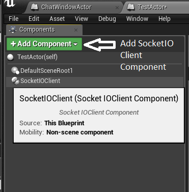
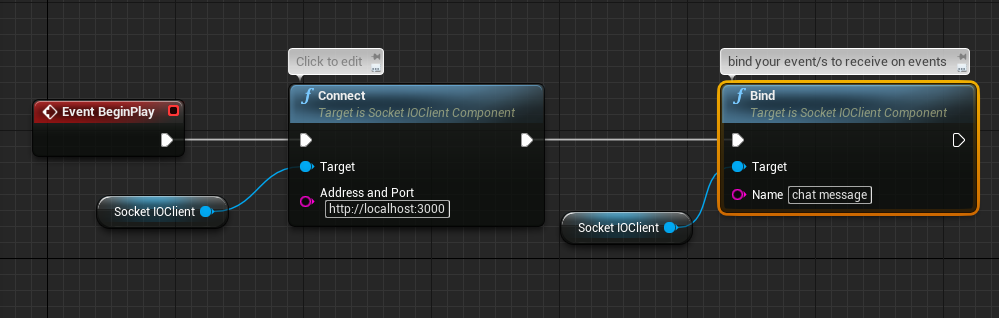
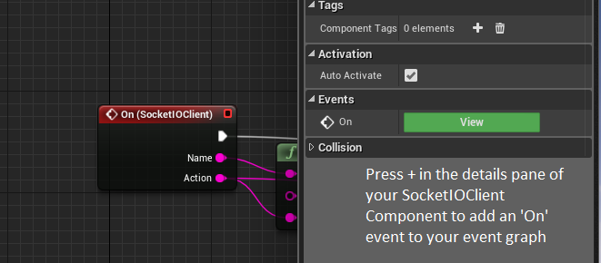
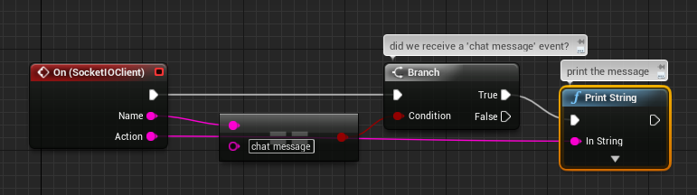
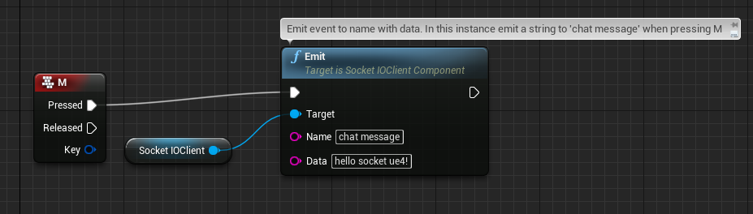

SocketIO Plugin
| Name | Socket.IO Client Plugin |
| Category | Communication |
| Author |
Overview
socket.io client plugin for UE4
Socket.io is a performant real-time bi-directional communication library. There are two parts, the server written in node.js and the client typically javascript for the web. There are alternative client implementations and this repo uses the C++11 client library ported to UE4.
See the main plugin thread for version downloads and development updates.
Quick Setup
- Download Latest Release
- Create new or choose project.
- Browse to your project folder (typically found at Documents/Unreal Project/{Your Project Root})
- Copy Plugins folder into your Project root.
- Restart the Editor and open your project again. Plugin is now ready to use.
How to use
Most up to date documentation is always found at the socketio-client-ue4 github repository .
Add the SocketIO Client Component to your blueprint actor of choice

Specify your address and port, defaults to localhost (127.0.0.1) at port 3000

Call bind for each event you wish the client to subscribe, e.g. 'chat message'
If you expect to receive events, select your component and in the Details pane press the + to add an 'On' event to your event graph

Handle this event for your event types, e.g. printing 'chat message' event strings.

If you want to send information to the server, emit events on the SocketIO Client Component, e.g. pressing M to emit a 'chat message' string

Contact
Post your questions and suggestions at the main plugin thread .